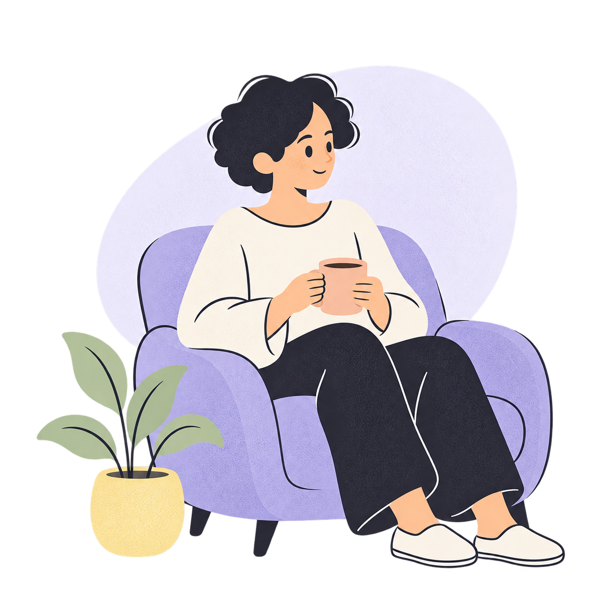

Studiepres
Opgaver, afleveringer og eksamener kan hurtigt komme til at fylde meget. Det kan være svært at finde balancen mellem skole og fritid.

Om Unplug
Unplug handler om at skabe plads til sig selv i en hverdag, hvor der ofte er mange ting, man skal nå og leve op til.
Find råd
Hvorfor Unplug?
Det kan være svært at finde ro, når skole, venner, familie og egne forventninger fylder. Nogle gange kan det føles, som om man hele tiden skal være på og have styr på det hele.
Men du behøver ikke præstere hele tiden. Det er vigtigt at give sig selv tid til at koble fra og mærke efter.
Når hverdagen fylder
Opgaver, afleveringer og eksamener kan hurtigt komme til at fylde meget. Det kan være svært at finde balancen mellem skole og fritid.
Nogle gange stiller vi meget høje krav til os selv. Vi vil gerne gøre det godt, men det er vigtigt at huske, at man ikke behøver være perfekt.
Når mange tanker fylder på én gang, kan det være svært at slappe af. Det kan hjælpe at stoppe op og give sig selv lidt ro.
Små skridt mod mere ro
Du behøver ikke ændre alt på én gang. Her er nogle små ting, du kan prøve, når hverdagen føles lidt overvældende.
Du behøver ikke være produktiv hele tiden. Tillad dig selv at holde en pause uden dårlig samvittighed.
Hvis hovedet er fyldt, kan du prøve at skrive det ned, der fylder lige nu.
Få frisk luft, læs en bog eller bare lav noget, der ikke kræver din opmærksomhed på en skærm.
Du behøver ikke klare alting selv. Tal med en, du føler dig tryg ved, eller få hjælp her
Et øjeblik til dig selv
Prøv en af de små øvelser, og giv dig selv et øjeblik til at trække vejret.
Tag tre rolige vejrtrækninger. Mærk, hvordan du trækker vejret, og giv dig selv et øjeblik uden andre krav.
Find fem ting, du kan se, fire ting, du kan mærke og tre ting, du kan høre.
Skriv de tanker ned, der fylder lige nu. Du behøver ikke finde løsninger på dem.
Du behøver ikke stå alene
Nogle gange er små pauser og gode råd ikke nok. Og det er helt okay. Der findes mennesker, som gerne vil hjælpe dig.
Hvis stress, bekymringer eller mistrivsel fylder meget i din hverdag, kan din egen læge hjælpe dig med at finde den rette støtte.
Læs mere på Sundhed.dkMange uddannelsessteder tilbyder vejledning, hvis du oplever studiepres eller har svært ved at få hverdagen til at hænge sammen.
Studenterrådgivningen tilbyder gratis og fortrolig rådgivning til studerende på videregående uddannelser, der opfylder deres adgangskrav.
Besøg StudenterrådgivningenVed livstruende situationer skal du ringe 112. Ved akut psykisk krise kan du kontakte lægevagten eller akuttelefonen i din region.
Find information hos SundhedsstyrelsenNogle gange er det første skridt bare at række ud.
Kontakt os